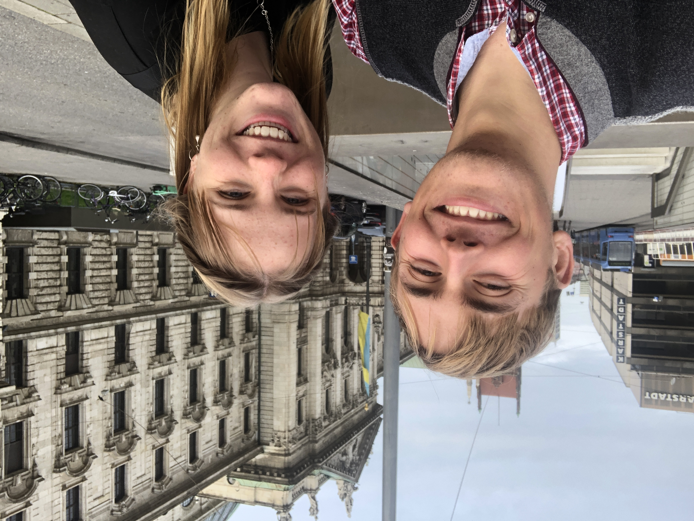
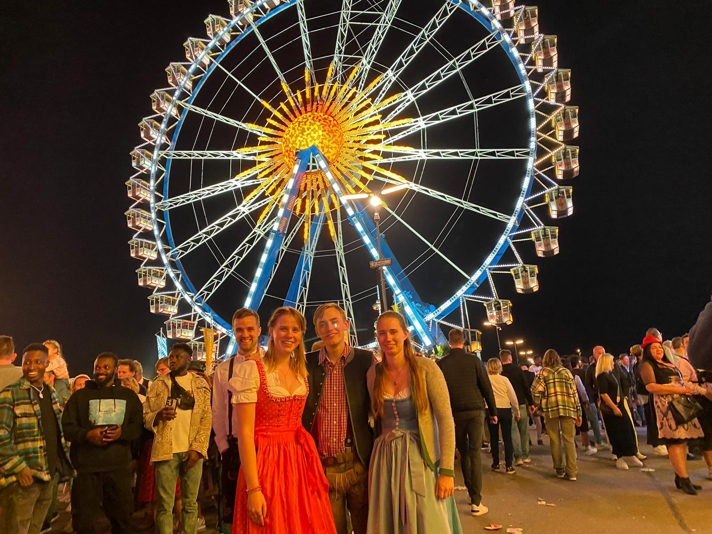
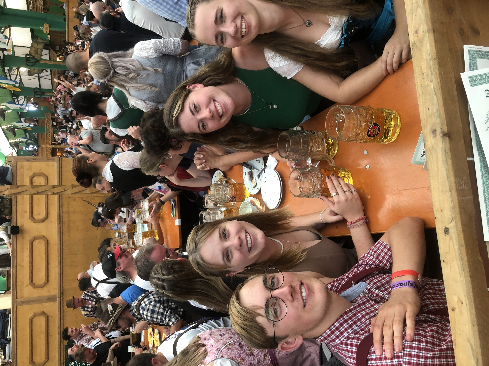
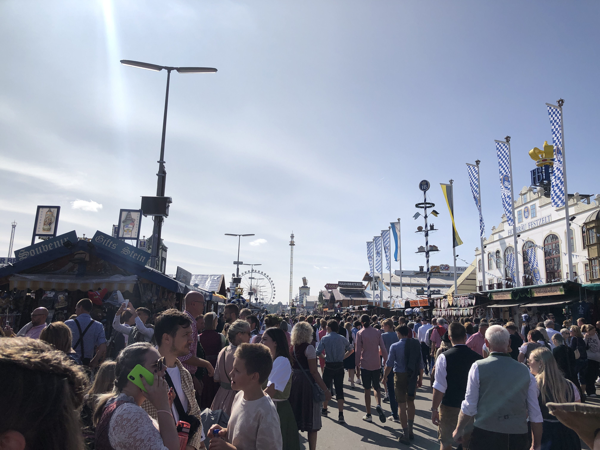
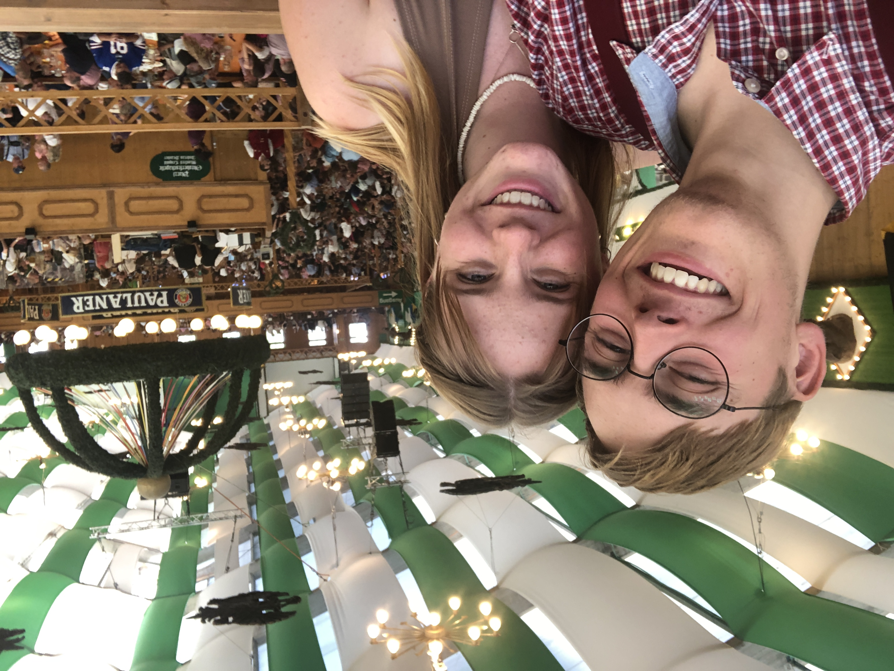
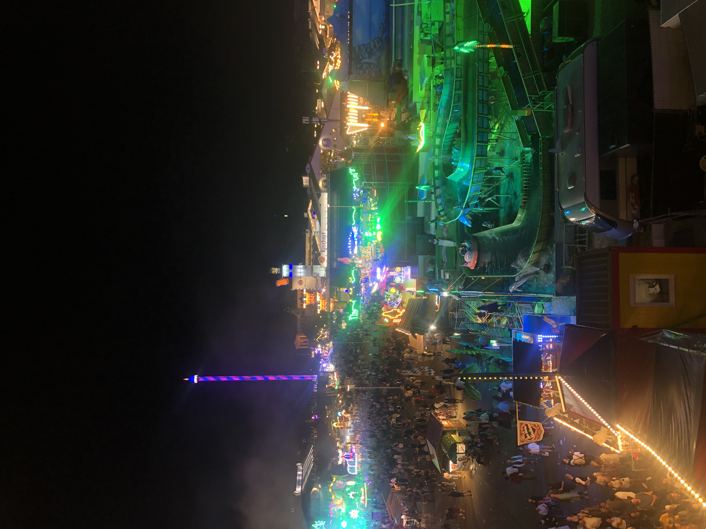
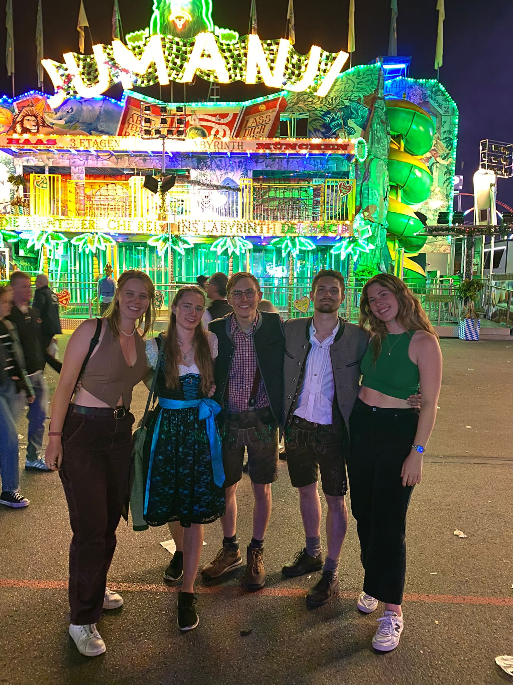

Preamble: I worked remotely, from the 1st until the 16th.
It was delayed but, in an amazing display of teamwork and ingenuity, they turned the plane around in seemingly 30 minutes. Once in Köln, I met a legend on the bus, called Sophie, with whom I chatted for the whole journey.
The next day I worked in the morning and then headed for some local attractions:
† 'Jesuit' is the name for members of the Catholic, Society of Jesus.
I then ventured back along Philosophie Weg before meeting three lovely groups:
Then I headed back home. The next day, I had a fun day working remotely, visiting the Botanical gardens and going shopping. I went to the Deutsch-Amerikanisches institut, where they hold a weekly global news/politics discussion group. On Tuesday, I moved to Walldorf and settled into a regime of work, gym, German practice, shopping for food and exploration (plus sleep). I also met the lovely Global Sponsorship team :) I also had my first Brezel (5/5).
A mapI chatted with James on the Friday night and we finished Avatar: The Last Airbender. On Saturday, I did some work; chatted with Millie and Will; then, I played tennis with Karl-Heinz (my friendly landlord/Vermieter). On Sunday, I cycled around the town, went to a local concert in the park and played Tennis with Jula – the host's daughter, who lives in Heidelberg – and Chris, her boyfriend. At the concert, I tried Laugenstange (4/5), which a bread roll dipped in Lye, which is alkali.
After meeting Axel and Lisa briefly, lots of the US team and Sinead from Ireland arrived and we headed to Lars' for a party! We played lots of party games and had a lovely meal together (dessert was an amazing tiramisu). A great evening, where I met lots of the team, many whom I would sadly not see again over the course of the year.
On the Tuesday, I made cookies and did a cheeky Joe Wicks workout. This week had a steep learning curve and so in the evenings I mainly practiced German and exercised. I did make a healthy Adam Ragusea soup though and took up an interest in the rowing machine. On Friday, I made this creamy, curry-powdered, vegetable dish before trying to catch some Zzzzzs.
Fun fact: Magpies are able to solve puzzles, mimic human speech and recognise themselves in the mirror. They use every chick in the book ;)
I didn't actually get to sleep, despite lying in bed for 2 hours 😢. However, I had a spring in my step, as I headed to the train station, which evaporated once I reached Heidelberg station and had to wait for 1.5 hours. After boarding the train, I chatted with this friendly gentleman, before clocking out, for an hour I awoke and our conversation resumed, until he departed. He did tell me about this river festival, in Ulms, called the Nabada: on this day, the river is full of inflatables!
Turns out, I was in carriage 9 and I was in class 2, a label all carriages bear (except first class). Izzi was very understanding :) Anyhow, we meet on the platform; stash my rucksack in a local locker; and head for the sites!. We went to the Frauenkirche, Marienplatz, briefly the Theatine Church and, lastly, the Karlsplatz. Next we grabbed a Brezn (3/5) and headed to the station, where we met Kira the legend, who provided a Dirndl for Izzi.
We headed to the festival, through bustling streets, past smiling people, until we reached the Wiesn. We looked at the Löwenbräu-Festzelt (which had a cool rotating lion outside), which is a tent many Australians visit. As we looked around our jaws dropped a little, and then some more... And then dislocated in awe of the scale and opportunity. We wandered a little before heading to the Paulaner Festzelt, where we set about wrestling for seats in the pens. These were unreserved seats, that on a Saturday, filled up quickly. Luckily, thanks to Kira's negotiating skills and Izzi's martial arts, we secured a spot.
We ordered a beer.... (at 10:20am 😆)
I had to distance myself from my beer as we took in the wonderful tents and surrounding revelry. In the middle was a brilliant band. Many people downed many drinks around us and our initial neighbours were more than a little flirty, at one point completely ceding their area for a group of bridesmaids. After a while though, the surrounding faces settled and we got chatting with Ricardio and his mates. He introduced a new drinking game, which mainly consisted of alcohol consumption at all opportunities.
We grabbed Pfannkuchensuppe and tried some Fasskraut (supposedly better Sauerkraut, from a jar). And our decline (especially mine) into inebreation continued 🍻. In the evening, we started dancing on the tables and were joined by some new faces, who were cool. We headed out at 9ish and grabbed Leberknödelsuppe (dumpling soup) and Zwetschgenknödel (mini prune dumplings). We then watched people "elegantly" attempt to ride the Toboboggan: a fast, uphill conveyor (the funny bit), followed by a helter skelter. It was a wonderful day and my face ached from smiling as I headed to the Lost Souls campsite...
I got up later and headed to meet the others at the station. This time we were joined by yet another legend: Lily. After a scrumptious Drehspieß Hähnchen, we headed in for round 2. We were able to visit the gorgeous horses which draw the beer barrels and visit some other tents such as the traditional Augustiner and Hacker Zelts (tents), before settling in the Armbrustschützenzelt (crossbow themed tent). Another band sat in the middle, which played more traditional Bavarian tunes for more of the day. We were served at the tables by Kira's friend Anna and later Sebastian, as well as Kira's chums from Acrobatics.
We tried a big Brezn (4/5 — mainly due to generous size). And played some Arshloch (a bit like Emperor) with Bavarian cards. As the sun went down, we went up onto the benches. I knocked over a drink, which I will forever feel guilty about :( Met some lovely folks.
We headed to the Toboboggan, and rode it pretty much successfully, before heading to the station. We caught the same train, and I sadly had to part with my partners-in-crime :(
I chatted with the person next to me on the train, who was from Sweden and spoke excellent German, who kindly supplied me with some Setayesh sweets and carrots 👍 I made it home at 1:30 am after a sensational weekend. Thanks be to Izzi for inviting me and orchestrating the weekend and to all those who made it so special 🤗
Bring on October
Home Oktober